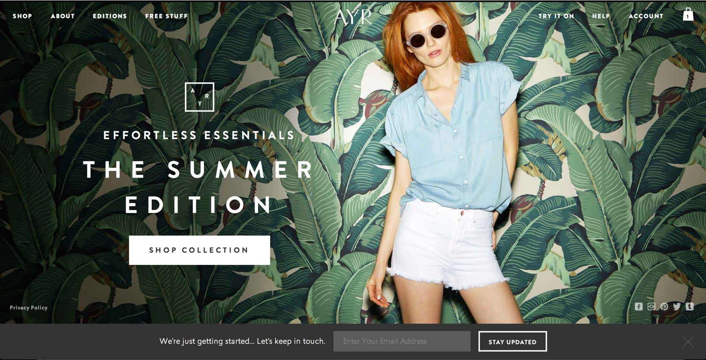

Will Binns-Smith
A JavaScript-obsessed fullstack engineer loving all things mobile and all things different.
Here's some stuff I've built.
Bonobos
I developed much of the frontend shopping cart functionality on Bonobos.com, which eliminated a full page load from the store and raised customer conversion by a statistically significant percentage.
I worked one-on-one with designers to bring a desktop-viewport only website to one that's completely optimized for smaller, touch-based devices.
I began with Bonobos in our Palo Alto, California office and soon relocated to NYC to build our technology team from 2 engineers to a team of 20+. I'm incredibly proud of the technology team we've built in our NYC headquarters.
AYR
I developed all of the frontend infrastructure and automation in node for Bonobos's next-generation platform, beginning with AYR, which is a 100% JavaScript frontend client to our core ecommerce services. I live and breathe JavaScript, obsessing over nuances in experiences of customers and business users.
